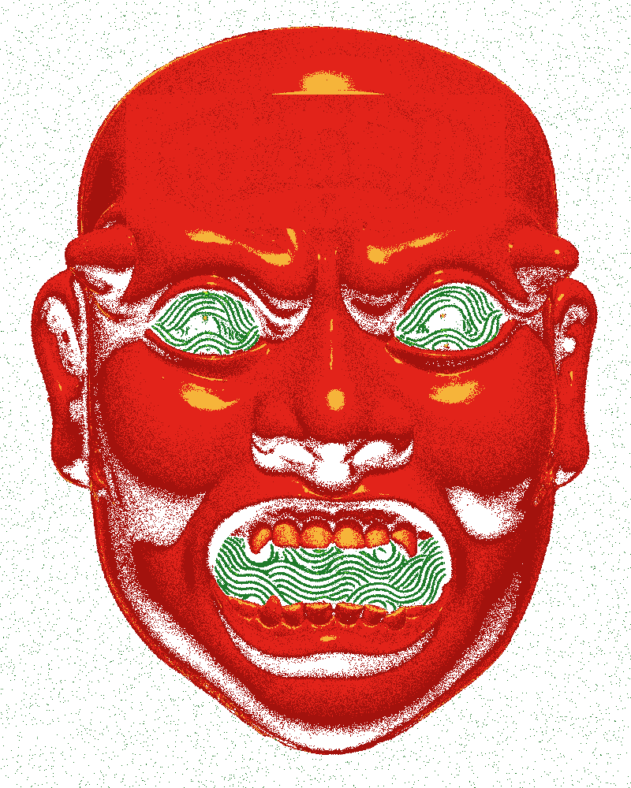
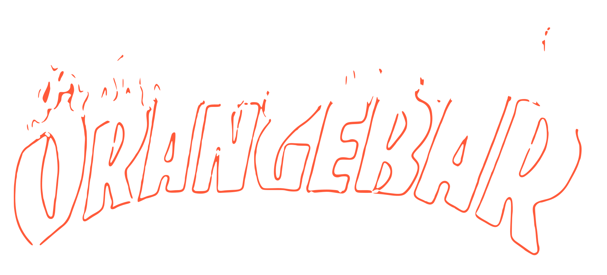
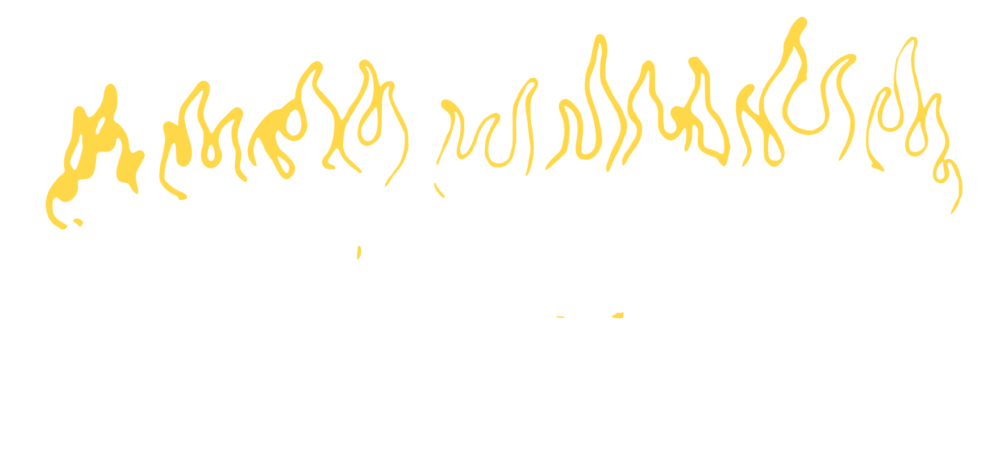
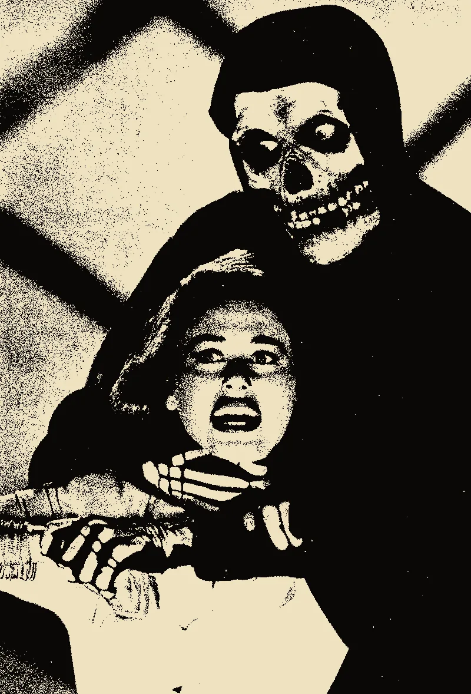
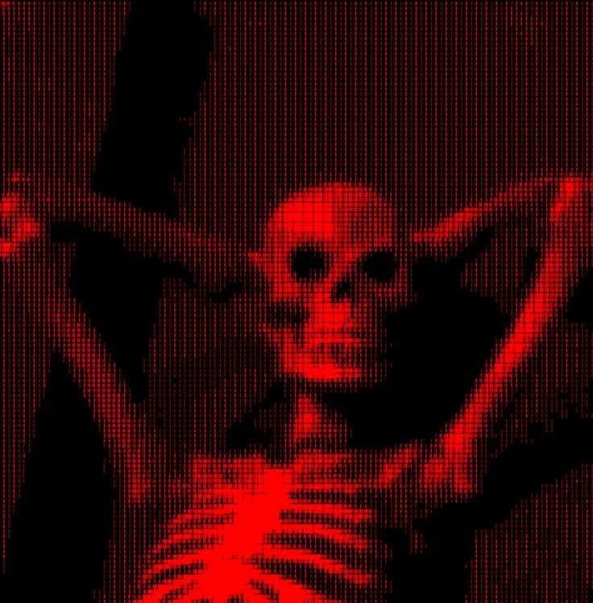
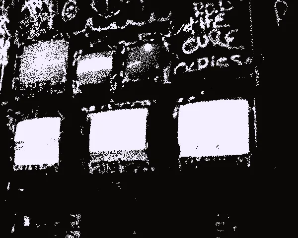
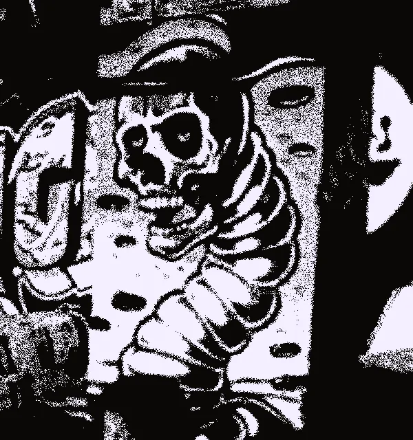
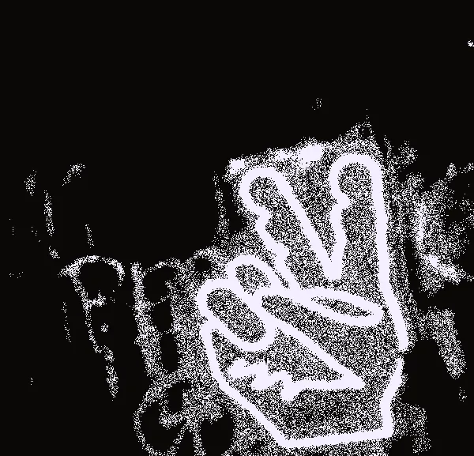
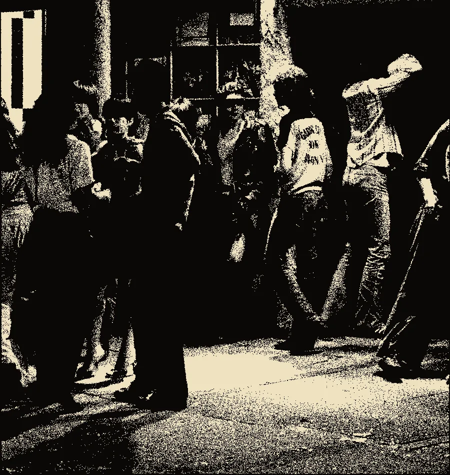

Música ardorosa para gente revoltosa
Rock en vivo
Music & Food
Orange Bar presenta
rock en vivo, tributos y fiestas en Pte. Perón 3330

Orange Bar
Music & Food
presenta

Te guardamos
lugar
Jueves
Rock en vivo
Pte. Perón 3330
[ esqueleto: imagen de referencia ]
Así es adentro: luz roja, neón y ruido.



Bandas en vivo, tributos y fiestas en Pte. Perón 3330 ロック・ライブ毎週木曜日

La puerta, un jueves a la noche[ foto de referencia: sacar una así en el bar ]